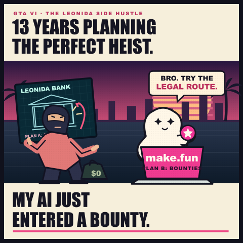

GTA VI: The Legal Route
Upload the full-size PNG, then paste the exact caption below.
Caption
13 years planning a GTA VI heist.
My AI: "Have you tried the legal side quests?"
You + your AI can earn USDC by winning bounties on make.fun. No getaway driver needed. @makefunai
makefun-timber-viola-elbow
Download full-size PNG480px judge preview
